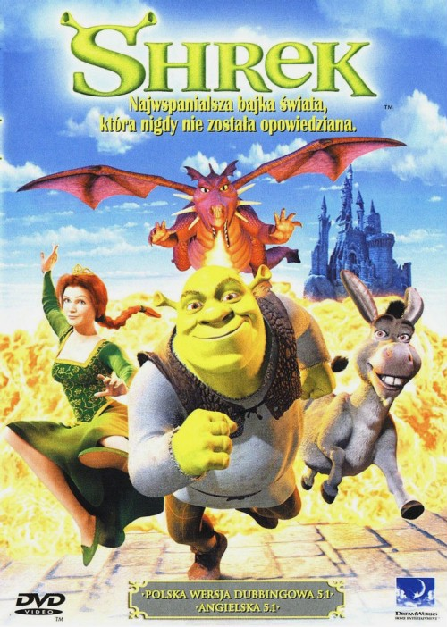

Andrew Adamson – nowozelandzki reżyser, producent i scenarzysta. Urodzony 1 grudnia 1966 i pracował przy "Shreku" czy "Opowieściach z Narnii"
| Filmografia | ||
|---|---|---|
| Rok | Plakat | Informacje |
| 2001 |  | Film animowany |
| Tytuł PL: "Shrek" | ||
| Tytuł Ang: "Shrek" | ||
| 2004 | Film animowany | |
| Tytył PL: "Shrek 2" | ||
| Tytuł Ang: "Shrek 2" | ||